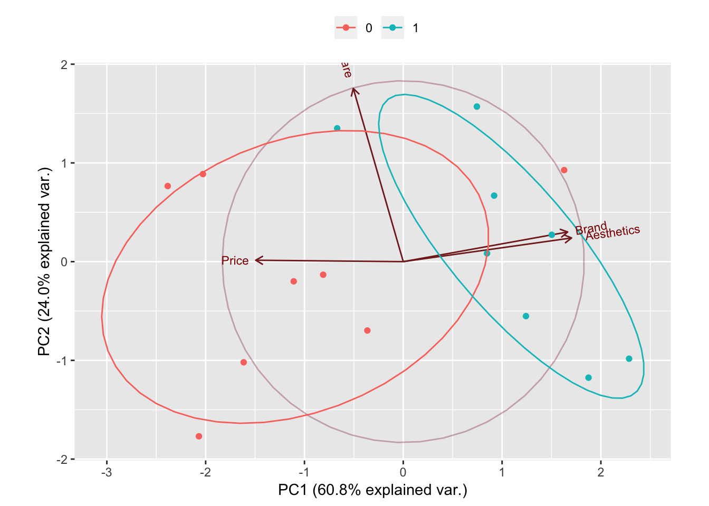

Chapter 10 Principal Component Analysis
To create a predictive model based on regression we like to have as many relevant predictors as possible. The whole difficulty resides in finding relevant predictors. For predictors to be relevant, they should explain the variance of the dependent variable.
Too many predictors (high dimensionality) and we take the risk of over-fitting.
The intuition of Principal Component Analysis is to find new combination of variables which form larger variances. Why are larger variances important? This is a similar concept of entropy in information theory. Let’s say you have two variables. One of them (Var 1) forms N(1, 0.01) and the other (Var 2) forms N(1, 1). Which variable do you think has more information? Var 1 is always pretty much 1 whereas Var 2 can take a wider range of values, like 0 or 2. Thus, Var 2 has more chances to have various values than Var 1, which means Var 2’s entropy is larger than Var 1’s. Thus, we can say Var 2 contains more information than Var 1.
PCA tries to find linear combination of the variables which contain much information by looking at the variance. This is why the standard deviation is one of the important metrics to determine the number of new variables in PCA. Another interesting aspect of the new variables derived by PCA is that all new variables are orthogonal. You can think that PCA is rotating and translating the data such that the first axis contains the most information, and the second has the second most information, and so forth.
Principal Component Analysis (PCA) is a feature extraction methods that use orthogonal linear projections to capture the underlying variance of the data. When PCR compute the principle components is not looking at the response but only at the predictors (by looking for a linear combination of the predictors that has the highest variance). It makes the assumption that the linear combination of the predictors that has the highest variance is associated with the response.
The algorithm when applied linearly transforms m-dimensional input space to n-dimensional (n < m) output space, with the objective to minimize the amount of information/variance lost by discarding (m-n) dimensions. PCA allows us to discard the variables/features that have less variance.
When choosing the principal component, we assume that the regression plane varies along the line and doesn’t vary in the other orthogonal direction. By choosing one component and not the other, we’re ignoring the second direction.
PCR looks in the direction of variation of the predictors to find the places where the responses is most likely to vary.
Some of the most notable advantages of performing PCA are the following:
- Dimensionality reduction
- Avoidance of multicollinearity between predictors. Variables are orthogonal, so including, say, PC9 in the model has no bearing on, say, PC3
- Variables are ordered in terms of standard error. Thus, they also tend to be ordered in terms of statistical significance
- Overfitting mitigation
The primary disadvantage is that this model is far more difficult to interpret than a regular logistic regression model
With principal components regression, the new transformed variables (the principal components) are calculated in a totally unsupervised way:
- the response Y is not used to help determine the principal component directions).
- the response does not supervise the identification of the principal components.
- PCR just looks at the x variables
The PCA method can dramatically improve estimation and insight in problems where multicollinearity is a large problem – as well as aid in detecting it.
10.1 PCA on an easy example.
Let’s say we asked 16 participants four questions (on a 7 scale) about what they care about when choosing a new computer, and got the results like this.
Price <- c(6,7,6,5,7,6,5,6,3,1,2,5,2,3,1,2)
Software <- c(5,3,4,7,7,4,7,5,5,3,6,7,4,5,6,3)
Aesthetics <- c(3,2,4,1,5,2,2,4,6,7,6,7,5,6,5,7)
Brand <- c(4,2,5,3,5,3,1,4,7,5,7,6,6,5,5,7)
buy_computer <- tibble(Price, Software, Aesthetics, Brand)Let’s go on with the PCA. princomp is part of the stats package.
pca_buycomputer <- prcomp(buy_computer, scale = TRUE, center = TRUE)
names(pca_buycomputer)## [1] "sdev" "rotation" "center" "scale" "x"print(pca_buycomputer)## Standard deviations (1, .., p=4):
## [1] 1.5589391 0.9804092 0.6816673 0.3792578
##
## Rotation (n x k) = (4 x 4):
## PC1 PC2 PC3 PC4
## Price -0.5229138 0.00807487 -0.8483525 0.08242604
## Software -0.1771390 0.97675554 0.1198660 0.01423081
## Aesthetics 0.5965260 0.13369503 -0.2950727 0.73431229
## Brand 0.5825287 0.16735905 -0.4229212 -0.67363855summary(pca_buycomputer, loadings = TRUE)## Warning: In summary.prcomp(pca_buycomputer, loadings = TRUE) :
## extra argument 'loadings' will be disregarded## Importance of components:
## PC1 PC2 PC3 PC4
## Standard deviation 1.5589 0.9804 0.6817 0.37926
## Proportion of Variance 0.6076 0.2403 0.1162 0.03596
## Cumulative Proportion 0.6076 0.8479 0.9640 1.00000OS <- c(0,0,0,0,1,0,0,0,1,1,0,1,1,1,1,1)
library(ggbiplot)
g <- ggbiplot(pca_buycomputer, obs.scale = 1, var.scale = 1, groups = as.character(OS),
ellipse = TRUE, circle = TRUE)
g <- g + scale_color_discrete(name = '')
g <- g + theme(legend.direction = 'horizontal',
legend.position = 'top')
print(g)
Remember that one of the disadventage of PCA is how difficult it is to interpret the model (ie. what does the PC1 is representing, what does PC2 is representing, etc.). The biplot graph help somehow to overcome that.
In the above graph, one can see that Brandand Aesthetic explain most of the variance in the new predictor PC1 while Software explain most of the variance in the new predictor PC2. It is also to be noted that Brand and Aesthetic are quite highly correlated.
Once you have done the analysis with PCA, you may want to look into whether the new variables can predict some phenomena well. This is kinda like machine learning: Whether features can classify the data well. Let’s say you have asked the participants one more thing, which OS they are using (Windows or Mac) in your survey, and the results are like this.
OS <- c(0,0,0,0,1,0,0,0,1,1,0,1,1,1,1,1)
# Let's test our model
model1 <- glm(OS ~ pca_buycomputer$x[,1] + pca_buycomputer$x[,2], family = binomial)
summary(model1)##
## Call:
## glm(formula = OS ~ pca_buycomputer$x[, 1] + pca_buycomputer$x[,
## 2], family = binomial)
##
## Deviance Residuals:
## Min 1Q Median 3Q Max
## -2.4485 -0.4003 0.1258 0.5652 1.2814
##
## Coefficients:
## Estimate Std. Error z value Pr(>|z|)
## (Intercept) -0.2138 0.7993 -0.268 0.7891
## pca_buycomputer$x[, 1] 1.5227 0.6621 2.300 0.0215 *
## pca_buycomputer$x[, 2] 0.7337 0.9234 0.795 0.4269
## ---
## Signif. codes: 0 '***' 0.001 '**' 0.01 '*' 0.05 '.' 0.1 ' ' 1
##
## (Dispersion parameter for binomial family taken to be 1)
##
## Null deviance: 22.181 on 15 degrees of freedom
## Residual deviance: 11.338 on 13 degrees of freedom
## AIC: 17.338
##
## Number of Fisher Scoring iterations: 5Let’s see how well this model predicts the kind of OS. You can use fitted() function to see the prediction.
fitted(model1)## 1 2 3 4 5 6
## 0.114201733 0.009372181 0.217716320 0.066009817 0.440016243 0.031640529
## 7 8 9 10 11 12
## 0.036189119 0.175766013 0.906761064 0.855587371 0.950088045 0.888272270
## 13 14 15 16
## 0.781098710 0.757499202 0.842557931 0.927223453These values represent the probabilities of being 1. For example, we can expect 11% chance that Participant 1 is using OS 1 based on the variable derived by PCA. Thus, in this case, Participant 1 is more likely to be using OS 0, which agrees with the survey response. In this way, PCA can be used with regression models for calculating the probability of a phenomenon or making a prediction.
I have tried to do the same with scaling the data using scale(x) and it changed absolutely nothing.
In general, the data will tend to follow the 80/20 rule. Most of the variance (interesting part of data) will be explained by a very small number of principal components. You might be able to explain 95% of the variance in your dataset using only 10% of the original number of attributes. However, this is entirely dependent on the dataset. Often, a good rule of thumb is to identify the principal components that explain 99% of the variance in the data.
10.2 References.
Here are the articles I have consulted for this research.
Computing and visualizing PCA in R This is where we learned about the `ggbiplot
Practical Guide to Principal Component Analysis (PCA) in R & Python
Data Mining - Principal Component (Analysis|Regression) (PCA)
PRINCIPAL COMPONENT ANALYSIS IN R A really nice explanation on the difference between the main packages doing PCA such as
svd,princompandprcomp. In R there are two general methods to perform PCA without any missing values: The spectral decomposition method of analysis examines the covariances and correlations between variables, whereas the singular value decomposition method looks at the covariances and correlations among the samples. While both methods can easily be performed within R, the singular value decomposition method is the preferred analysis for numerical accuracy.
Although principal component analysis assumes multivariate normality, this is not a very strict assumption, especially when the procedure is used for data reduction or exploratory purposes. Undoubtedly, the correlation and covariance matrices are better measures of similarity if the data is normal, and yet, PCA is often unaffected by mild violations. However, if the new components are to be used in further analyses, such as regression analysis, normality of the data might be more important.